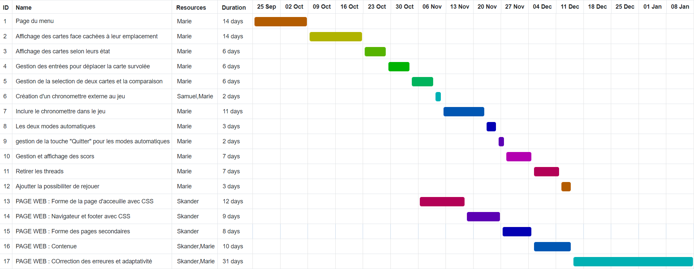

Les difficultés rencontrées :
-
L'affichage ncurses :
La librairie ncurses ne permettant l'affichage que, par caractères ASCII, il est donc difficile de faire une belle présentation originale s'adaptant à la taille de la fenêtre.
-
L'actualisation de l'affichage des cartes :
Cherchant à optimiser le code, nous avons tout d'abord opter pour un rafraichissement, uniquement, des cartes dont l'affichage est modifié (en écrasant les anciennes cartes).
Seulement, il y'avait trop de paramètres à prendre en compte tel que la carte survolée, la ou les cartes retournées s'il y'en a. Il fallait donc faire beaucoup de tests rendant le code non optimisé.
Nous avons donc finalement choisis de réafficher l'ensemble du plateau de cartes pour chaques modifications.
-
Le chronomètre :
En parallèle du déroullement du jeu, la gestion du chronomètre était difficile à gérer.
En effet, nous avons tout d'abord décidé de compiler deux programmes en simultanée grâce aux "threads". Cependant, l'un des problèmes rencontrés avec les theads, est que les modifications de l'affichage en "simultané" par différents thread créait de nombreux bugs . Il fallait donc vérouiller l'ensemble des autres threads durant la modification. D'autre part, la synchronisation buggait au bout d'un certain moment de jeu.
Bien que nous ayons finis par résoudre tous ces problèmes avec des mutex, nous avons préférés créer une autre version qui n'utilise aucun thread. Pour cette version nous avons donc fait en sorte que la commande de lecture d'une entrée n'attende pas s'il n'y en a aucune dans la mémoire tampon.
-
Les pseudo :
Le fait d'avoir choisi de faire en sorte que l'utilisateur puisse mettre des espace à causer quelques difficultées et nous a pris du temps. Pour cela nous avons utilisé le séparateur ":".
-
La touche quitter en mode automatique et pendantles les "pauses" :
Le problème a été le même que pour le chronomètre. En effet, il fallait vérifier que la touche puisse être pressé lors du déroulement du jeu automatique, mais égallement lors des pauses d'affichage (lorsque l'affichage doit être figé pendans 1 à 2 secondes).
A notter que le même problème s'est pausé pour la touche "C" qui permet la modiffication du thème de couleure.
Nos choix pour notre code :
-
L'affichage des cartes :
Nous avons opter pour gérer l'affichage des cartes à la manière de la programmation objet. Nous avons créé des fonctions qui, en prenant en paramètre l'indice de la carte, affiche celle-ci de la manière demandé (de face, de dos, ...).
Nous avons procédé ainsi car nous trouvons que cela optimisait grandement notre algorithme. En éffet, une fois créé, ces fonctions nous ont permis de se concentrer sur le déroulement du jeu et de ne plus se préoccuper de l'affichage.
-
Un affichage épuré :
Entre un affichage simple mais adaptatif et un autre plus poussé mais qui ne s'adapte pas à la taille de la fenêtre, nous avons donc choisi la première option. Nous n'avons donc pas pu faire l'affichage de la valeur des cartes de manière illustré avec un ensemble de caractères ASCII, mais seulement avec un caractère.
Notre diagramme de Gantt :
cliquez sur l'image pour l'agrandir ↑